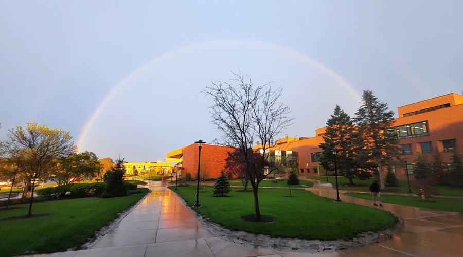
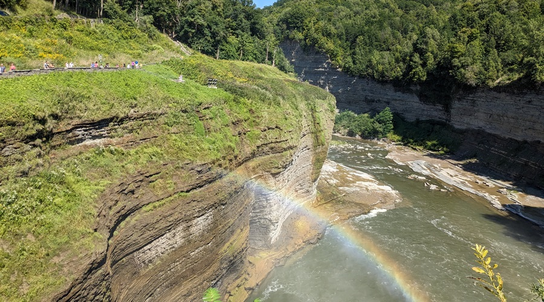
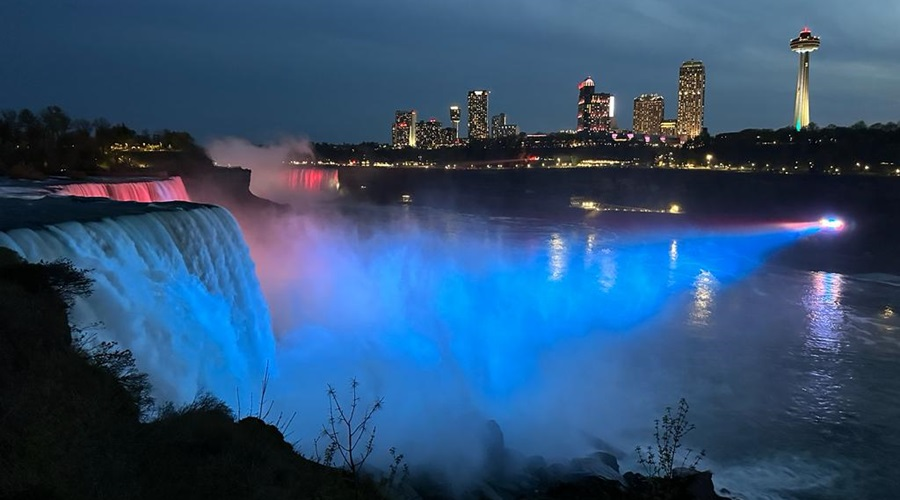
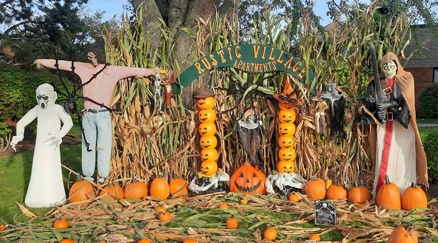

Rochester Institute of Technology
At RIT during my PhD journey, where my work focused on gravitational-wave astrophysics, Bayesian inference, and compact binary populations.

Letchworth State Park, New York
A snapshot from New York during my graduate years, balancing research, teaching, and personal milestones.
Rochester, New York
A moment from Rochester, where I continued building my research profile in gravitational-wave population inference.

Niagara Falls, New York
A personal milestone and travel memory from 2023, during an important phase of academic and professional development.

Rochester, New York
Early years in Rochester, adapting to a new research environment and building momentum in graduate school.